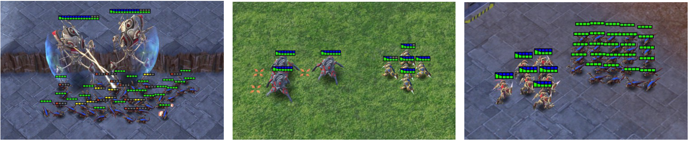
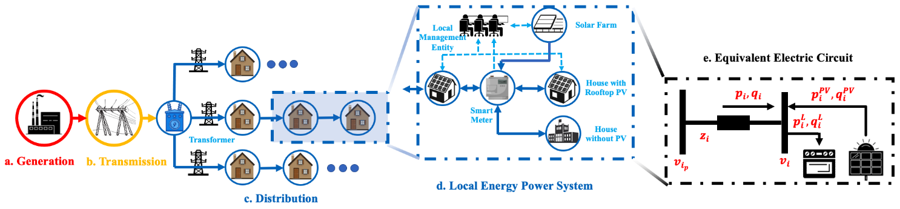

5. 环境介绍
5.1. SMAC
SMAC 是 WhiRL 基于暴雪星际争霸 II RTS 游戏的协作多智能体强化学习 (MARL) 领域的研究环境。 SMAC 利用暴雪的星际争霸 II 机器学习 API 和 DeepMind 的 PySC2 为自主代理提供便捷的接口，以便与星际争霸 II 交互、获取观察结果并执行操作。 与 PySC2 不同，SMAC 专注于去中心化的微观管理场景，其中游戏的每个单元都由单独的 RL 代理控制。
官方链接: oxwhirl/smac
5.1.1. 环境特征
环境 |
任务模式 |
可观测性 |
动作空间 |
回报 |
交互模式 |
|---|---|---|---|---|---|
SMAC |
合作 |
部分可观测 |
离散 |
稠密/稀疏 |
同时 |
5.1.2. 安装方法
5.1.2.1. 安装 StarCraft II
StarCraftII 是 SMAC 所调用的游戏引擎， SMAC 需要通过调用 StarCraftII 游戏引擎进行对局，所以在安装 SMAC 之前要安装 StarCraftII 。
切换到要安装StarCraftII的目录，然后运行以下命令：
wget https://blzdistsc2-a.akamaihd.net/Linux/SC2.4.10.zip
unzip -P iagreetotheeula SC2.4.10.zip
rm -rf SC2.4.10.zip
cd StarCraftII/
wget https://raw.githubusercontent.com/Blizzard/s2client-proto/master/stableid.json
在 ~/. bashrc 中添加以下行：
export SC2PATH="/path/to/your/StarCraftII"
将 amb/envs/smac/SMAC_Maps 目录复制到 StarCraftII/Maps 。
5.1.2.2. 安装SMAC
pip install git+https://github.com/oxwhirl/smac.git
5.1.3. 使用方法
更改 amb/configs/env_cfgs/smac.yaml 配置项：
map_name: 3s_vs_4z
state_type: FP # choose from FP (Feature Pruned) and EP (Environment Provided)
replay_dir: ""
replay_prefix: ""
训练时指定环境：
python -u single_train.py --env smac --algo mappo --run single
提示
项目可自动查找环境名称对应的配置项，保持名称相同即可。
5.2. SMACv2

SMACv2 是对 SMAC 的更新， SMACv2 和 SMAC 主要是关注非中心的具体场景，而不是一场完整的游戏对局。 SMACv2 和 SMAC 同样通过 DeepMind 提供的 pysc2 和 Blizzard 提供的 StarCraftII 机器学习 API 。
SMACv2 相对于 SMAC 进行了三项主要改动:
随机化起始位置
随机化单位类型
更改单位的视野范围和攻击范围
官方链接: oxwhirl/smacv2
5.2.1. 环境特征
环境 |
任务模式 |
可观测性 |
动作空间 |
回报 |
交互模式 |
|---|---|---|---|---|---|
SMACv2 |
合作 |
部分可观测 |
离散 |
稠密/稀疏 |
同时 |
5.2.2. 安装方法
5.2.2.1. 安装 StarCraft II
StarCraftII 是 SMAC 所调用的游戏引擎， SMAC 需要通过调用 StarCraftII 游戏引擎进行对局，所以在安装 SMAC 之前要安装 StarCraftII 。
切换到要安装StarCraftII的目录，然后运行以下命令：
wget https://blzdistsc2-a.akamaihd.net/Linux/SC2.4.10.zip
unzip -P iagreetotheeula SC2.4.10.zip
rm -rf SC2.4.10.zip
cd StarCraftII/
wget https://raw.githubusercontent.com/Blizzard/s2client-proto/master/stableid.json
在 ~/. bashrc 中添加以下行：
export SC2PATH="/path/to/your/StarCraftII"
将 amb/envs/smacv2/SMAC_Maps 目录复制到 StarCraftII/Maps 。
5.2.2.2. 安装SMACv2
pip install git+https://github.com/oxwhirl/smacv2.git
如果需要扩展 SMACv2 ，必须按照以下安装：
git clone https://github.com/oxwhirl/smacv2.git
cd smacv2
pip install -e ".[dev]"
pre-commit install
5.2.3. 使用方法
更改 amb/configs/env_cfgs/smacv2.yaml 配置项：
map_name: protoss_5_vs_5
修改该配置下的地图名称，会选择 amb/configs/env_cfgs/smacv2_map_config 下对应的地图配置文件 amb/configs/env_cfgs/smacv2_map_config/{map_name}.yaml 。
其中包括各种详细的设定。
continuing_episode: False
difficulty: "7"
game_version: null
map_name: "10gen_protoss"
move_amount: 2
obs_all_health: True
obs_instead_of_state: False
obs_last_action: False
obs_own_health: True
obs_pathing_grid: False
obs_terrain_height: False
obs_timestep_number: False
reward_death_value: 10
reward_defeat: 0
reward_negative_scale: 0.5
reward_only_positive: True
reward_scale: True
reward_scale_rate: 20
reward_sparse: False
reward_win: 200
replay_dir: ""
replay_prefix: ""
conic_fov: False
use_unit_ranges: True
min_attack_range: 2
obs_own_pos: True
num_fov_actions: 12
capability_config:
n_units: 5
n_enemies: 5
team_gen:
dist_type: "weighted_teams"
unit_types:
- "stalker"
- "zealot"
- "colossus"
weights:
- 0.45
- 0.45
- 0.1
observe: True
start_positions:
dist_type: "surrounded_and_reflect"
p: 0.5
map_x: 32
map_y: 32
# enemy_mask:
# dist_type: "mask"
# mask_probability: 0.5
# n_enemies: 5
state_last_action: True
state_timestep_number: False
step_mul: 8
heuristic_ai: False
# heuristic_rest: False
debug: False
训练时指定环境：
python -u single_train.py --env smacv2 --algo mappo --run single
5.3. Multi-Agent MuJoCo

MAMujoco 是一个支持多个智能体进行机器人控制的环境。 是基于广为流行的单智能体机器人控制平台 Mujoco 为基础，提供了各种任务场景，包括人形机器人、蛇形机器人、四足行走机器人等多种任务场景。 其中属于同一个机器人的多个智能体需要协作解决任务。
官方链接: google-deepmind/mujoco
5.3.1. 环境特征
环境 |
任务模式 |
可观测性 |
动作空间 |
回报 |
交互模式 |
|---|---|---|---|---|---|
MAMujoco |
合作/协作 |
部分可观测 |
连续 |
稠密 |
同时 |
5.3.2. 安装方法
5.3.2.1. 安装 mujoco
mujoco 是 MAMujoco 所使用的物理引擎，现在可以直接使用 pip 进行安装。
pip install mujoco
5.3.2.2. 安装 gymnasium-robotics
gymnasium-robotics 是管理多智能体强化学习的 API ，通过调用 gymnasium-robotics 的接口来使用 MAMujoco 。
pip install gymnasium-robotics==1.2.3
5.3.3. 使用方法
更改 amb/configs/env_cfgs/mamujoco.yaml 配置项：
scenario: HalfCheetah
agent_conf: 6x1
agent_obsk: 1
# render_mode: "human"
训练时指定环境：
python -u single_train.py --env mamujoco --algo mappo --run single
5.4. PettingZoo MPE

MPE(Multi-particle Environms) 是一个面相通信的环境，环境中的量子智能体可以移动，通信，相互观测，相互交互以及和地图中的固定地标交互。 具有连续观察和离散动作空间，和一些基本的物理模拟。
官方链接: openai/multiagent-particle-envs
5.4.1. 环境特征
环境 |
任务模式 |
可观测性 |
动作空间 |
回报 |
交互模式 |
|---|---|---|---|---|---|
pettingzoo_mpe |
合作/协作/竞争/混合 |
全局可观测 |
离散+连续 |
稠密 |
同时/异步 |
5.4.2. 安装方法
5.4.2.1. 安装 pettingzoo==1.24.1
mpe 环境现已经被集成到 pettingzoo 中，安装 pettingzoo 即可调用 mpe 环境。
pip install pettingzoo==1.24.1
pip install supersuit==3.9.0
5.4.3. 使用方法
更改 amb/configs/env_cfgs/pettingzoo_mpe.yaml 配置项：
scenario: simple_spread_v3 # choose from simple_spread_v3, simple_reference_v3, simple_speaker_listener_v4
continuous_actions: True
训练时指定环境：
python -u single_train.py --env pettingzoo_mpe --algo mappo --run single
5.5. Google Research Football

Google Research Football 是基于开源游戏 Gameplay Football 的RL环境。 其中智能体接受训练，在基于物理模拟的 3D 模拟器中踢足球。
官方链接: google-research/football
5.5.1. 环境特征
环境 |
任务模式 |
可观测性 |
动作空间 |
回报 |
交互模式 |
|---|---|---|---|---|---|
Google Research Football |
合作/协作 |
全局可观测 |
离散 |
稀疏 |
同时 |
5.5.2. 安装方法
5.5.2.1. 安装 Google Research Football
Google Research Football 的安装需要依赖一些系统级别的依赖。
sudo apt-get install git cmake build-essential libgl1-mesa-dev libsdl2-dev \
libsdl2-image-dev libsdl2-ttf-dev libsdl2-gfx-dev libboost-all-dev \
libdirectfb-dev libst-dev mesa-utils xvfb x11vnc python3-pip
在完成对系统级别的依赖进行安装之后，直接使用 pip 对 Google Research Football进行安装。
pip install gfootball
5.5.3. 使用方法
更改 amb/configs/env_cfgs/football.yaml 配置项：
env_name: academy_pass_and_shoot_with_keeper
stacked: False
representation: simple115v2
rewards: scoring,checkpoints
write_goal_dumps: False
write_full_episode_dumps: False
render: False
write_video: False
dump_frequency: 1
logdir: ~
extra_players: ~
number_of_left_players_agent_controls: 2 # has to be consistent with the default setting below
number_of_right_players_agent_controls: 0
channel_dimensions:
- 96
- 72
other_config_options: ~
# env_num_agents (for REFERENCE):
# "academy_pass_and_shoot_with_keeper": 2,
# "academy_run_pass_and_shoot_with_keeper": 2,
# "academy_3_vs_1_with_keeper": 3,
# "academy_counterattack_easy": 4,
# "academy_counterattack_hard": 4,
# "academy_corner": 11,
# "academy_single_goal_versus_lazy": 11
训练时指定环境：
python -u single_train.py --env football --algo mappo --run single
5.6. Gym

gym 是由 OPENAI 公司开发的集成了多种强化学习环境的泛用强化学习库，提供了一个简单且通用的接口来训练代理在各种环境中的表现。gym 包含了多种标准测试环境，使研究人员和开发者可以在相同的条件下测试和比较他们的算法。
官方链接: gymlibrary
5.6.1. 环境特征
环境 |
任务模式 |
可观测性 |
动作空间 |
回报 |
交互模式 |
|---|---|---|---|---|---|
gym |
合作/协作/竞争 |
全局可观测/部分可观测 |
离散/连续 |
稠密/稀疏 |
同时 |
5.6.2. 安装方法
5.6.2.1. 安装 gym
pip install gym
5.6.3. 使用方法
更改 amb/configs/env_cfgs/gym.yaml 配置项：
scenario: Ant-v2 # LunarLanderContinuous-v2, CarRacing-v0 选择具体的场景
训练时指定环境：
python -u single_train.py --env gym --algo mappo --run single
5.7. Toy Example

Toy Example 主要设计用于探索代理间的协作或对抗策略。环境具有一个简单的二元状态（0.0或1.0），代表两种不同的配置。每个代理都可以选择两种行动之一。环境的观察空间根据是否包含最后一次的状态和动作而变化，基础观察包括当前状态和代理标识。环境逻辑依赖于两个代理行动的一致性：如果一致，则状态转换并根据当前状态给予奖励；如果不一致，则状态保持不变。环境通过限定步数实现结束条件，提供重置和种子设定功能以支持实验的可复现性。这个环境非常适合用来开发和测试多智能体系统的交互策略，通过调整观察空间的复杂度来适应不同的学习需求和挑战。
5.7.1. 环境特征
环境 |
任务模式 |
可观测性 |
动作空间 |
回报 |
交互模式 |
|---|---|---|---|---|---|
toy |
合作 |
全局可观测 |
离散 |
稠密 |
同时 |
5.7.2. 安装方法
toy 内置在 AMB 代码中，不需要通过 pip 下载额外的依赖。
5.7.3. 使用方法
更改 amb/configs/env_cfgs/toy.yaml 配置项：
obs_last_state: True
obs_last_action: True
训练时指定环境：
python -u single_train.py --env toy --algo mappo --run single
5.8. Bi-DexHands

Bi-DexHands（bi-dexhands.ai）是基于Issac Gym构建的模拟人类灵巧双手操作的任务集合（例如移交、举起、投掷、放置等）。
相关链接: PKU-MARL/DexterousHands, bi-dexhands.ai
5.8.1. 环境特征
环境 |
任务模式 |
可观测性 |
动作空间 |
回报 |
交互模式 |
|---|---|---|---|---|---|
dexhands |
合作 |
部分可观测 |
连续 |
- |
同时 |
5.8.2. 安装方法
首先正确安装IsaacGym，有关IsaacGym安装的详细信息可以在 Isaac Gym 找到。
cd isaacgym/python
pip install -e .
正确安装Vulkan SDK，有关Vulkan驱动的详细信息可以在 Vulkan 找到。
wget -qO- https://packages.lunarg.com/lunarg-signing-key-pub.asc | sudo tee /etc/apt/trusted.gpg.d/lunarg.asc
sudo wget -qO /etc/apt/sources.list.d/lunarg-vulkan-1.3.275-jammy.list https://packages.lunarg.com/vulkan/1.3.275/lunarg-vulkan-1.3.275-jammy.list
sudo apt update
sudo apt install vulkan-sdk
5.8.3. 使用方法
更改 amb/configs/env_cfgs/dexhands.yaml 配置项：
task: ShadowHandCatchOver2Underarm
hands_episode_length: 75
训练时指定环境：
python -u single_train.py --env dexhands --algo mappo --run single
5.9. Quadrotor Swarms


Quadrotor Swarms 是从 gym_art 延伸出来的飞行动力学模拟器，扩展到支持四旋翼无人机群的模拟任务。
相关链接: Zhehui-Huang/quad-swarm-rl
5.9.1. 环境特征
环境 |
任务模式 |
可观测性 |
动作空间 |
回报 |
交互模式 |
|---|---|---|---|---|---|
quads |
合作 |
部分可观测 |
连续 |
- |
同时 |
5.9.2. 安装方法
已在源码中集成，无需额外安装。
5.9.3. 使用方法
更改 amb/configs/env_cfgs/quads.yaml 配置项：
scenario: quadrotor_multi
conf:
quads_use_numba: True
quads_num_agents: 2
quads_mode: static_same_goal
quads_episode_duration: 15.0
quads_neighbor_encoder_type: no_encoder
quads_neighbor_hidden_size: 0
quads_neighbor_obs_type: none
quads_neighbor_visible_num: 0
replay_buffer_sample_prob: 0.75
quads_obs_repr: xyz_vxyz_R_omega
quads_collision_hitbox_radius: 2.0
quads_collision_falloff_radius: 1.0
quads_use_obstacles: False
quads_obst_density: 0.2
quads_obst_size: 1.0
quads_obst_spawn_area: [6.0, 6.0]
quads_use_downwash: False
quads_room_dims: [10., 10., 10.]
quads_view_mode: ['topdown', 'chase', 'global']
quads_render: False
quads_domain_random: False
quads_obst_density_random: False
quads_obst_size_random: False
quads_obst_density_min: 0.05
quads_obst_density_max: 0.2
quads_obst_size_min: 0.3
quads_obst_size_max: 0.6
quads_collision_reward: 0.0
quads_collision_smooth_max_penalty: 10.0
quads_obst_collision_reward: 0.0
anneal_collision_steps: 0.0
with_pbt: False
visualize_v_value: False
训练时指定环境：
python -u single_train.py --env quads --algo mappo --run single
5.10. Network System Control

Network System Control网络系统控制环境是一个模拟交通信号控制的多智能体强化学习环境。在这个环境中，智能体需要通过控制交通信号来优化交通流量。可用的四个场景分别是：
ATSC Grid：合成交通网格中的自适应交通信号控制。
ATSC Monaco：摩纳哥市真实交通网络中的自适应交通信号控制。
CACC Catch-up：协作自适应巡航控制，用于追赶领先车辆。
CACC Slow-down：协作自适应巡航控制，用于跟随领先车辆减速。
相关链接: cts198859/deeprl_network
5.10.1. 环境特征
环境 |
任务模式 |
可观测性 |
动作空间 |
回报 |
交互模式 |
|---|---|---|---|---|---|
network |
合作 |
部分可观测 |
离散 |
- |
同时 |
5.10.2. 安装依赖
pip install eclipse-sumo sumolib traci seaborn ipdb
5.10.3. 使用方法
更改 amb/configs/env_cfgs/network.yaml 配置项：
scenario: large_grid
network_cfg: config_ma2c_nc_grid.ini
output_dir: results/network_data # from root of repo
训练时指定环境：
python -u single_train.py --env network --algo mappo --run single
5.11. Voltage Control
Active Voltage Control on Power Distribution Networks (MAPDN)是电力分布网络上分布式/分散式有源电压控制的环境，也是可用于批量的状态最先进的多智能体Actor-Critic算法的训练。环境的实现遵循PyMARL中提供的多智能体环境框架。
相关链接: Future-Power-Networks/MAPDN
5.11.1. 环境特征
环境 |
任务模式 |
可观测性 |
动作空间 |
回报 |
交互模式 |
|---|---|---|---|---|---|
voltage |
合作 |
部分可观测 |
离散 |
- |
同时 |
5.11.2. 安装依赖
pip install pandapower
5.11.3. 使用方法
更改 amb/configs/env_cfgs/voltage.yaml 配置项：
env: "voltage_control"
env_args:
"voltage_barrier_type": "l1" # "l1", "l2", "bowl", "courant_beltrami", "bump"
"voltage_weight": 1.0
"q_weight": 0.1
"line_weight": null
"dq_dv_weight": null
"history": 1
"pv_scale": 1.0
"demand_scale": 1.0
"state_space": ["pv", "demand", "reactive", "vm_pu", "va_degree"]
"v_upper": 1.05
"v_lower": 0.95
"data_path": "data/case33_3min_final" # from the root of valtage_control environment folder
"episode_limit": 240 # in time intervals
"action_scale": 0.8
"action_bias": 0
"mode": distributed # distributed / decentralised
"reset_action": True
"seed": 0
训练时指定环境：
python -u single_train.py --env voltage --algo mappo --run single